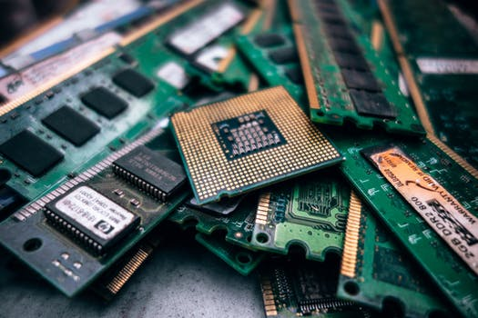
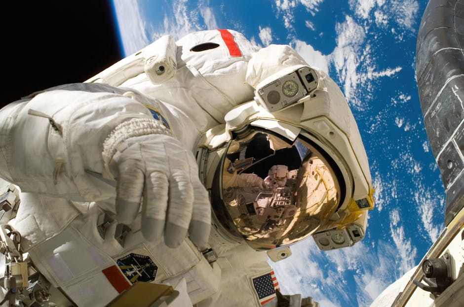
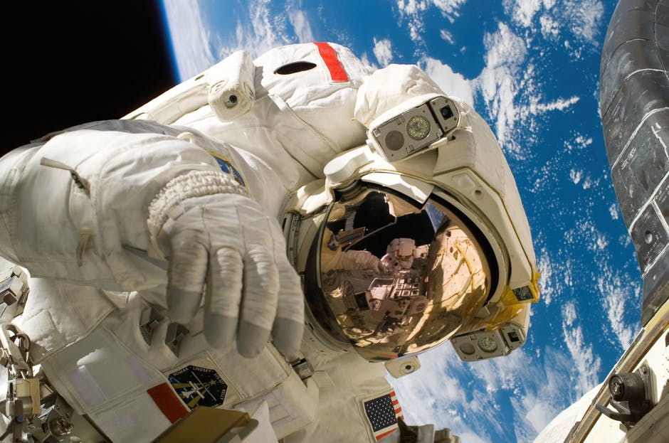

Yana in Wonderland
I remember the time 20 something years ago when I first opened a page on the internet. Or should I say “almost” opened it. There were not enough computers in class, so we were sitting 2 (sometimes even 3) students per machine and we were trying to understand the wonders of DOS. The teacher told us from the beginning of the course that the computer just in front of him “has internet”, so one day my friend and I arrived early, managed to actually connect to the internet (it took us more than 10 minutes with the dail-up) and opened a browser.
We were so excited!
I was well prepared and had an actual web site written on a piece of paper (took that earlier from a magazine), so we typed in the address and waited for the miracle to happen. Well, it didn’t. A few minutes later the teacher came and we had to start the class, so we couldn’t wait for the page to upload properly. But still, for two girls born in a communist country it was a huge revelation that the western world with all its wonders was just a few clicks away.

World Wide Web
At this point of my life I had absolutely no idea about the invention of the "World Wide Web” in 1989 from Tim Berners-Lee and his role of making my future adventures possible.
“Tim Berners-Lee wrote the first version of the HTML, the document formatting language with the capability for hypertext links that became the primary publishing format for the Web. His initial specifications for URIs, HTTP, and HTML were refined and discussed in larger circles as Web technology spread.”
That gave us all the possibility years later to connect our own devices to the internet.
How it works
A small piece of technology was the reason of the massive step forward towards the systems that we use today. In 1950s transistors replaced the vacuum tubes in computers. The transistor could replicate all the functions of tubes, but was made out of semiconductor materials, was durable, much smaller and require much less voltage than tubes in order to function.
Transistors take in a small electric current at one end and produce a bigger electric current at the other; or switch electric signals on and off. With billions of transistors, a chip can store billions of zeros and ones which made future of computers and other devices possible.
Communication technologies evolved from the analog form like radio, telegraph and telephone to modern day’s devices starting in 1960s with the foundation of ARPANET (Advanced Research Project Agency). From simple networks between just a few computers, replacing circuit switches with packet one, using protocols as set of rules for every computer in the network, inventing of URL (Uniform Recourse Locator), HTTP (Hypertext Transfer Protocol), Web server software, HTML (Hypertext Markup Language) to the first browser application Mosaic in 1993, the Web become available to more and more people around the globe.
In 1994 the Netscape Navigator became THE browser and that was the same browser that I first came across in the basement of my school in Burgas a few years later.
At the beginning pages on Internet were made from a webmasters with some basic knowledge of HTML. Those websites were static with a load of information and no interactive content. Connection that was used was a dial-up telephone modem that was slow and unsecure.

Web 1.0 to Web 3.0
In late 1990s there was already an option to implement CSS, to add a comment section, to make your page more visible. Pages started to become more dynamic. Web 2.0 allowed us to be active on the Internet and opened the door for social media.
Every time when we open a browser we, as a client, send a request to the server with the information that we require. To proceed the request, first we have to connect to the internet with the help of our internet provider (ISP). User types in a domain address, computer translates that string into bits and starts asking domains if they know this IP address, then information travels back to the user with the copy of the data we were looking for.
Data travels in packages and each of its layers cannot be translated without the other. One is responsible for the physical transmission, others for addressing, connecting, transmitting, some for carrying the protocols.
The static Web 1.0 and the interactive Web 2.0 lead us to the future – the semantic Web 3.0. The web which will speak the language of the computers, where our internet search will be simplified as the machines will be able to give us more precise answers to our queries by looking into the actual content of the websites, going through our search history and learning more about us each day from the feedback that we will be giving them.
 

The sky is not the limit
Some of the changes in the digital world are already happening. Implementing the crypto currency into some payment systems, allowing faster and more secure transactions is already happening for some companies.
But the world wide web will be soon available outside the Earth. NASA is already working on Disruption Tolerant Networking. The technology will be able to send information through space using DTN bundles.
So, with “interplanetary internet” soon coming to life, no one knows what future holds for the Web and the mankind.